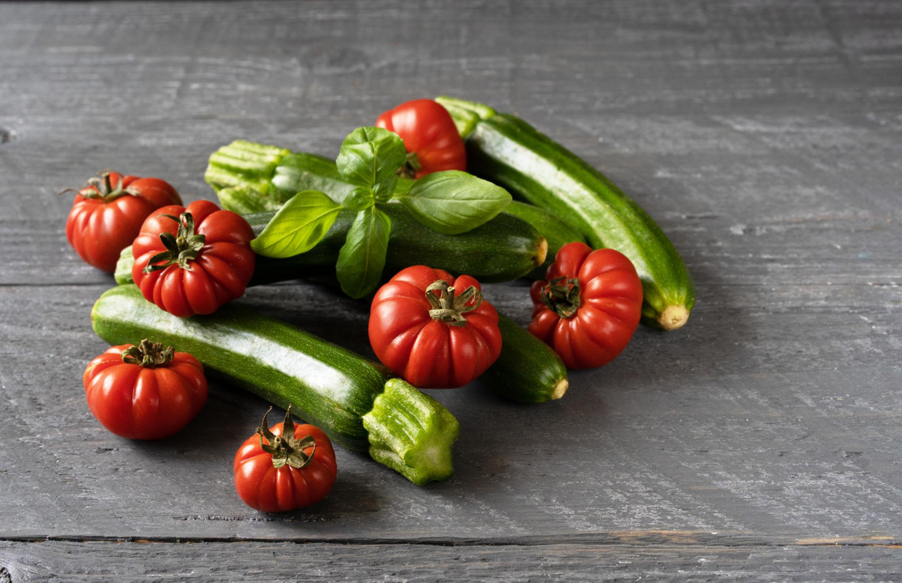

CHEF'S COMMITMENT

東京都出身。調理師専門学校卒業後、渡伊。イタリア・トスカーナ州フィレンツェの名店にて10年間修業を積む。現地の食文化・食材に深く触れ、イタリア料理の本質を習得。
帰国後は都内有名レストランでシェフを務め、2015年に念願の独立を果たし「オステリア ルーチェ」を開業。日本の四季の食材とイタリアの伝統技法を融合させた、独自のスタイルが話題を呼ぶ。
「料理は愛情と素材への敬意から生まれる」をモットーに、毎朝市場へ足を運び、その日最良の食材を選び抜くことを欠かしません。
毎朝、豊洲市場や地元農家へ直接出向き、その日最も状態の良い食材だけを厳選します。鮮度と品質が料理の土台——これはシェフが修業時代から変わらない信念です。
イタリア産の優良食材も、信頼できる輸入業者を通じて吟味の上仕入れています。

全てのパスタは毎日仕込む自家製手打ち。小麦粉の配合からパスタの厚さまで、料理ごとに最適な生地を作り上げます。機械では出せない、手打ちならではの食感がソースとの相性を生み出します。
フィレンツェで学んだ古典的な技法を守りながら、日本の食材に合わせた独自のアレンジを加えています。

日本近海で獲れた新鮮な魚介類を、イタリアの伝統的な調理法で仕上げます。エビ、ムール貝、タコ——それぞれの素材が持つ旨みを最大限に引き出すことが、シェフの腕の見せどころです。
火入れの温度、時間、ソースとのバランスにこだわり、素材の良さをシンプルに表現します。

仔牛のポルケッタ、和牛のビステッカ——シェフが特に情熱を注ぐのが肉料理です。食材の持ち味を活かすため、熟成期間や下処理から一切手を抜きません。
薪火や炭火を取り入れた調理法で、香ばしさとジューシーさを両立。イタリア伝統の技がここに息づいています。

「料理は、愛情と素材への敬意から生まれる。」
— Chef Seiichi Tanaka
山菜・タケノコ・新玉ねぎ。芽吹きの季節の柔らかな風味をシンプルに活かした料理。
トマト・茄子・ズッキーニ。夏野菜の豊かな旨みと色彩で食卓に彩りを添えます。
ポルチーニ・トリュフ・栗。秋の豊かな香りがイタリアンとの親和性を高めます。
白子・カキ・根菜類。滋味深い冬の食材をじっくり煮込んだ温かな料理。

イタリア各地のDOCG・DOCワインを中心に、料理との相性を最優先に厳選したセラーをご用意しています。
トスカーナの赤ワインからピエモンテの繊細な白まで、ソムリエ資格を持つスタッフがその日の料理に合わせた最適な一本をご提案します。
グラスワインから希少なプレミアムボトルまで、幅広いラインナップで、ワイン通のお客様にも満足いただける品揃えです。